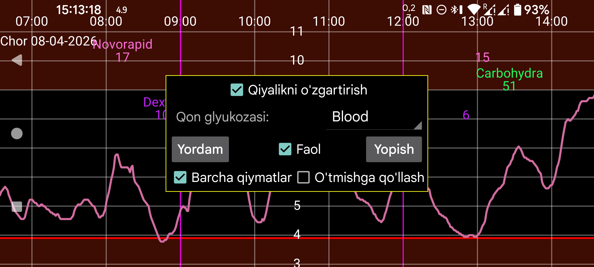

ar de es hi it ja nl ru uk uz en
Juggluco 10.0.0 va undan yuqori versiyalar sensorlarni kalibrlash imkonini beradi.
Qon glyukozasi: qaysi yorliq barmoqdan o‘lchangan qon glyukozasi o‘lchovlari uchun ishlatilishini ko‘rsating. Shundan keyin shu yorliq ostida kiritilgan barcha qon glyukozasi qiymatlari kalibrlash uchun ishlatiladi. Faqat chap o‘rta menyu→Yangi miqdor bo‘limida Chiqarib tashlash belgilanganlari bundan mustasno. Agar o‘zgarish tezligi juda katta bo‘lsa, qiymat avtomatik chiqarib tashlanadi.
Faqat glyukoza darajasi barqaror bo‘lmagani uchun kalibrlashga yaramaydigan qiymatlarnigina chiqarib tashlash kerak. Boshqa barcha qiymatlar chiqarib tashlanmasligi kerak, hatto siz sensorni kalibrlash shart emas deb o‘ylasangiz ham. Agar kalibrlashni xohlamasangiz, Faol ni o‘chirib qo‘ying va o‘ng o‘rta menyuda Oqim, Skanlar va Tarix oldidagi ✓ belgilari olib tashlanib, ularning orqasidagi [x] belgilarini yoqing. Shunda faqat mos kelmaydiganlar emas, balki kalibrlash uchun mos barcha glyukoza qiymatlari ishlatiladi.
Chiqarib tashlanmagan har bir yangi barmoq o‘lchovi yangi kalibrlashni beradi. Bajarilgan kalibrlashlarni sensor ma’lumoti ekranidagi Kalibrlashlar tugmasi orqali ko‘rish mumkin. Sensor ma’lumoti ekraniga glyukoza egri chizig‘ini uzoq bosib yoki chap menyu→Sensor orqali o‘tasiz. Kalibrlashlar ma’lum bir sensorga tegishli bo‘ladi.
Agar O‘tmishga qo‘llash yoqilmagan bo‘lsa, glyukoza qiymatlari shu qiymatdan oldingi oxirgi kalibrlash bilan tuzatiladi. Agar bu yoqilgan bo‘lsa, oxirgi kalibrlash shu sensorning barcha glyukoza qiymatlariga qo‘llanadi.
Agar Qiyalikni o‘zgartirish yoqilmagan bo‘lsa, kalibrlangan glyukozani olish uchun har bir sensor qiymatiga faqat ma’lum miqdor qo‘shiladi yoki ayiriladi:
Kalibrlangan glyukoza = Sensor glyukozasi + b
b qiymati kalibrlash orqali aniqlanadi. Bu rejimda juda yuqori glyukoza qiymatlari bilan kalibrlash tavsiya etilmaydi, chunki hisoblangan b past qiymatlar uchun haddan tashqari katta bo‘lishi mumkin.
Agar Qiyalikni o‘zgartirish yoqilgan bo‘lsa, munosabat quyidagicha bo‘ladi:
Kalibrlangan glyukoza = a × Sensor glyukozasi + b
Bu holatda a 1 dan farq qilishi mumkin. Turli diapazondagi kalibrlashlar muhim. Masalan, barcha qon glyukozasi o‘lchovlari 90 mg/dL (5 mmol/L) atrofida olingan bo‘lsa, lekin sensor qiymatlari 54 dan 180 mg/dL gacha (3 dan 10 mmol/L gacha) yoyilgan bo‘lsa, a ni ishonchli aniqlash uchun bu yetarli darajada turli emas.
Juggluco glyukoza o‘lchovlarini ularning yangiligiga qarab tortadi: joriy qiymatning og‘irligi 1 ga teng, eski qiymatlarning og‘irligi esa kichikroq bo‘ladi. Kalibrlashning o‘zi ham shunday tortiladi, shuning uchun vaqt o‘tishi bilan eski kalibrlashning ta’siri kamayadi: a 1 ga, b esa 0 ga yaqinlashadi.
Ishlatilgan qon glyukozasi o‘lchovlarining umumiy og‘irligi kalibrlashga qanchalik katta ta’sir berilishini belgilaydi. Ko‘proq va yangiroq qon glyukozasi qiymatlari bo‘lsa, kalibrlangan glyukoza qiymatlari qon glyukozasi bilan CGM glyukozasi o‘rtasidagi eng mos keluvchi chiziqqa ko‘proq yaqinlashadi.
Tarix qiymatlarini o‘sha zahoti kalibrlab bo‘lmaydi. Libre sensorlari uchun qiymatlarni kalibrlash 21 daqiqa, CareSense Air uchun 31 daqiqadan keyin bajarilishi rejalashtirilgan, lekin ko‘pincha undan keyinroq bo‘ladi. Oqim kalibrlashi keyinroq yana takrorlanadi, shunda keyingi CGM ham ishlatilishi mumkin bo‘ladi.
Faol: bu yoqilgan bo‘lsa, kalibrlangan qiymatlar signallar, broadcast’lar, Health Connect, Juggluco ichidagi Nightscout/xDrip veb serveri, soatlarga yuboriladigan glyukoza va suzuvchi glyukoza uchun ishlatiladi. Juggluco ning o‘ng tomonida kalibrlangan qiymat katta shrift bilan, kalibrlanmagan qiymat esa undan keyin kichik shrift bilan ko‘rsatiladi. U hech qachon Libreview’ga yuborishda ishlatilmaydi.
Kalibrlangan glyukoza egri chizig‘i o‘ng o‘rta menyuda Oqim va Tarix oldidagi belgilar orqali yoqiladi. Xom qiymatlar esa Oqim va Tarix dan keyingi belgilash qutilari bilan yoqiladi yoki o‘chiriladi.
Barcha qiymatlar: ayrim nuqtalar uchun kalibrlangan qiymat bo‘lmaydi. Agar bu belgi qo‘yilmagan bo‘lsa, kalibrlangan egri chiziq bunday joylarda hech narsa ko‘rsatmaydi. Agar belgilansa, u joylarda kalibrlanmagan qiymat ko‘rsatiladi. Shu yo‘l bilan o‘ng o‘rta menyuda xom qiymatlarni o‘chirib ham barcha qiymatlarni ko‘rish mumkin.